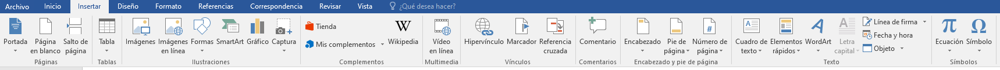
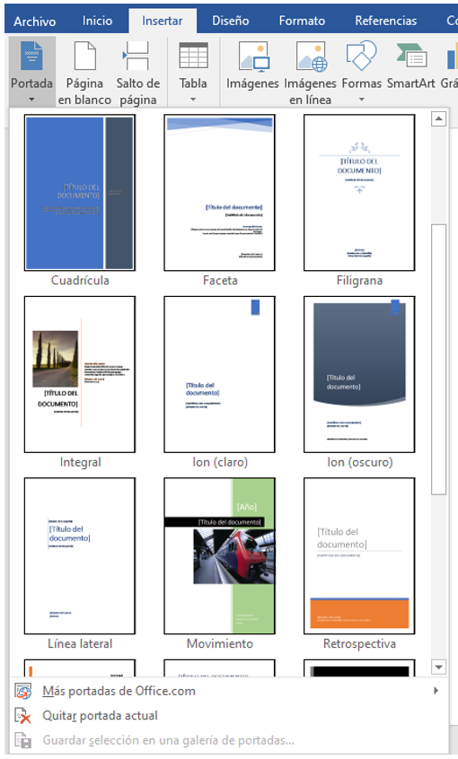
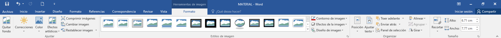
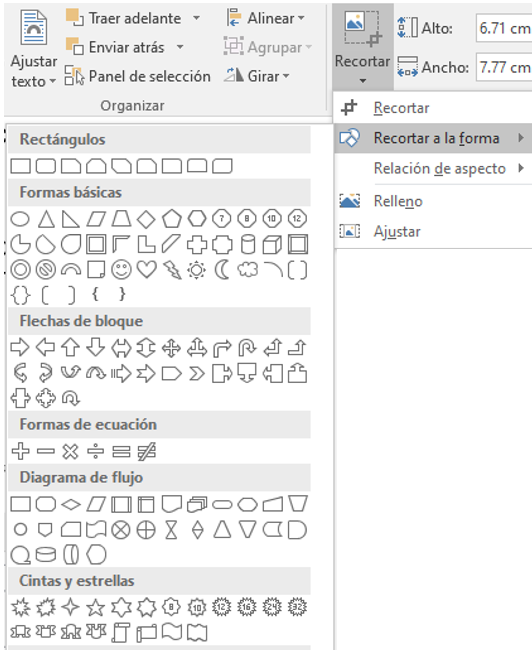
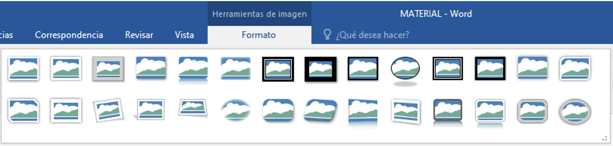
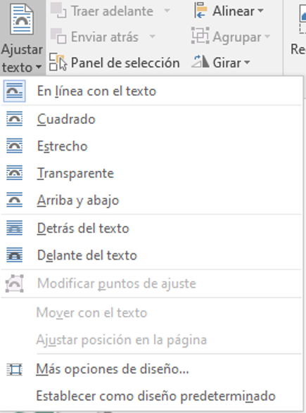
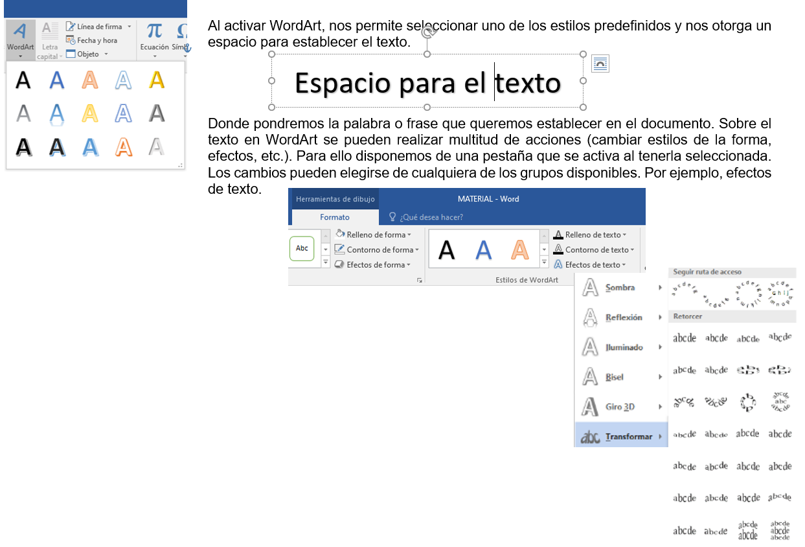

FORMATO DE DOCUMENTO POR MEDIO DE HERRAMIENTAS INSERTAR
.

.
A continuación se desglosan algunas de las Herramientas de la pestaña Insertar.
.En ocasiones los documentos que realizamos necesitan de una portada, Word tiene a disposición una serie de portadas predefinidas.

Por otra parte, un documento se verá enriquecido si se incorporan imágenes, gráficos y cualquier otro objeto que apoye su contenido de forma más visual. Algunos de los elementos de que consta el GRUPO ILUSTRACIONES son Imágenes (archivos con formato JPEG, GIF, BMP, etc.), Formas (autoformas, líneas, rectángulos, elipses, etc.), SmartArt (para representación de datos en forma de organigramas, listas, etc.).
Sobre las imágenes se pueden realizar multitud de operaciones, como mover, copiar, cambiar el tamaño, variar la intensidad, etc. Para ello disponemos de pestañas que se activan al tener seleccionada la imagen haciendo clic en ella. La imagen quedará enmarcada por unos pequeños iconos y veremos que disponemos de las Herramientas de imagen agrupadas en la pestaña Formato.

Los círculos que apreciamos al seleccionar la imagen, situados en las esquinas, se pueden arrastrar para modificar simultáneamente la altura y anchura de la imagen. Otra forma de modificar el tamaño es desde la pestaña Formato, estableciendo directamente la altura y la anchura en centímetros.
Pero si lo que deseamos es recortarla para quedarnos con sólo una parte de la imagen, también lo podremos hacer desde aquí con la Herramienta Recortar. Al hacer clic sobre ella se dibujará un borde negro, debemos acercar el cursor al borde y hacer clic e ir arrastrando. Se va a ver sombreada la zona a eliminar y al hacer clic fuera de la imagen se aplicará el recorte. Además de este tipo de recorte, tenemos disponible Recortar a una forma específica. Por lo que la imagen se recortará de acuerdo a la forma seleccionada.


Un elemento importante a considerar es la alineación o posición que tendrá la imagen en el documento. Mover o cambiar la posición de una imagen en la página en Word es sencillo como arrastrarla con el ratón. Pero a veces no queda establecida como nos interesa. Una vez que se ha llevado la imagen a la posición deseada, activar la opción Ajustar texto, y determinar según nuestro interés. Por ejemplo, para ajustar el texto alrededor de la imagen, pero hacer que la imagen se mueva hacia arriba o hacia abajo a medida que se agregue o se elimine texto, debe seleccionar Cuadrado.

Hay diversas formas de modificar una imagen, en Word se permite ajustar la nitidez, brillo y contraste de una forma intuitiva, efectos artísticos entre otro conjunto de opciones disponibles a elegir.
En el GRUPO TEXTO, Word dispone de una herramienta denominada WordArt que permite crear rótulos de forma sencilla, escogiendo de entre una lista con modelos de letras. Lo único que debemos hacer es dar clic sobre la que más nos guste.
